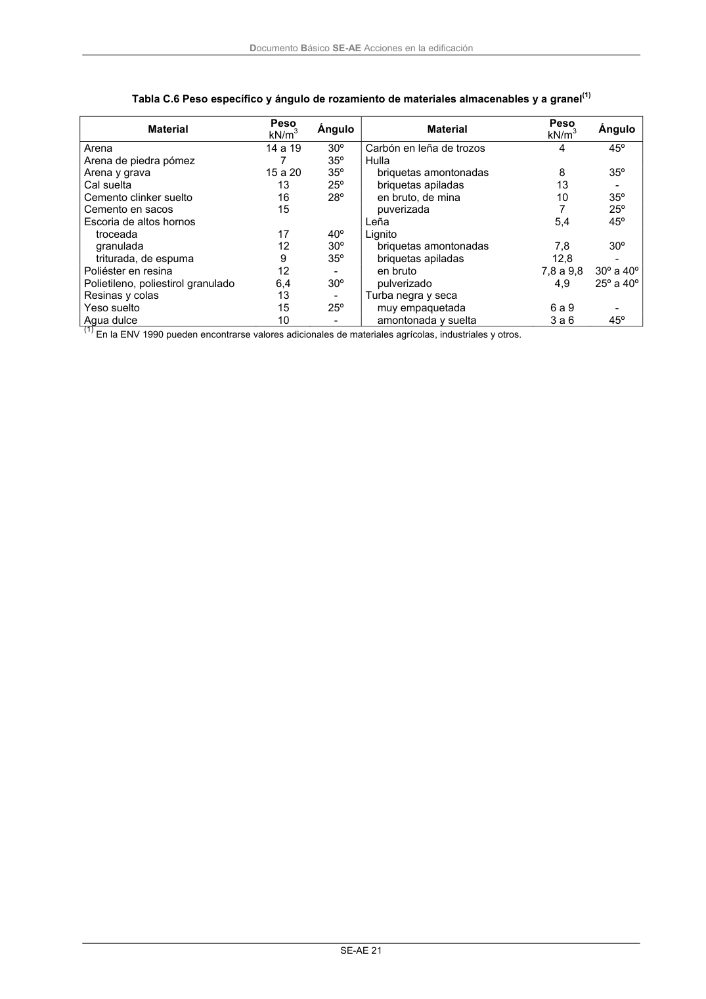

DB-SE-AE Acciones en la edificación · edición 2009-04 · capa oficial
Documento DB-SE-AE-oficial · SHA-256 del PDF 26116e5088955f0c6963a6187270cad282e1e7bf5a53a90f695c8fa50b4e4487
Página física 25 de 46.
Copia fiel del PDF fuente · Fuente oficial
Ficha de la disposición en la fuente oficial
Formato: Texto de la página (Markdown)
Documento Básico SE-AE Acciones en la edificación
SE-AE 21
Tabla C.6 Peso específico y ángulo de rozamiento de materiales almacenables y a granel(1)
Material
Peso
kN/m3
Ángulo
Material
Peso
kN/m3
Ángulo
Arena
14 a 19
30º
Carbón en leña de trozos
4
45º
Arena de piedra pómez
7
35º
Hulla
Arena y grava
15 a 20
35º
briquetas amontonadas
8
35º
Cal suelta
13
25º
briquetas apiladas
13
-
Cemento clinker suelto
16
28º
en bruto, de mina
10
35º
Cemento en sacos
15
puverizada
7
25º
Escoria de altos hornos
Leña
5,4
45º
troceada
17
40º
Lignito
granulada
12
30º
briquetas amontonadas
7,8
30º
triturada, de espuma
9
35º
briquetas apiladas
12,8
-
Poliéster en resina
12
-
en bruto
7,8 a 9,8
30º a 40º
Polietileno, poliestirol granulado
6,4
30º
pulverizado
4,9
25º a 40º
Resinas y colas
13
-
Turba negra y seca
Yeso suelto
15
25º
muy empaquetada
6 a 9
-
Agua dulce
10
-
amontonada y suelta
3 a 6
45º
(1) En la ENV 1990 pueden encontrarse valores adicionales de materiales agrícolas, industriales y otros.

Datos candidatos: compruebe celdas y notas en el PDF.